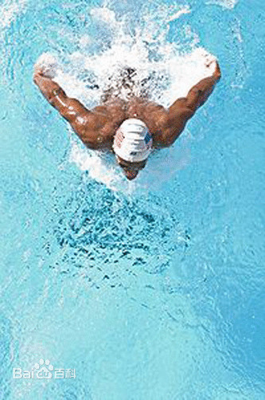

蝶泳是游泳项目之一，蝶泳技术是在蛙泳技术动作基础上演变而来的。当蛙泳技术发展到第二阶段时，也就是1937-1952年这一时期，在游泳比赛中，有些运动员采用两臂划水到大腿后提出水面，再从空中迁移的技术，从外形看，好像蝴蝶展翅飞舞，所以人们称它为“蝶泳”。蝶泳在4种竞技游泳姿势中是最后发展起来的泳姿。由于它的腿部动作酷似海豚，所以又称为“海豚泳”。
动作概要
海豚泳和蹬腿蝶泳的臂部动作基本结构是一样的，主要区别在于腿部动作。游蹬腿蝶泳时，由于收腿产生阻力，影响动作的连贯性和前进速度。而海豚泳采用波浪式的上下打腿动作,动作连贯,前进速度比较均匀。由于海豚泳技术比较先进，已为广大蝶泳运动员所采用。
现代蝶泳（指海豚泳）的基本动作是，两臂入水后向外分开时手心转向侧外，然后转向侧下进行划水，这时保持高肘姿势，使手和小臂形成较好的对水位置，并开始由前向后，由外向里划水，划至腹下时肘关节弯屈程度达到最大，两手相距很近。接着向后向外推水结束臂的划水动作。两手在大腿两旁借助于划水的惯性出水，两臂从空中绕半圆形向前移，至前方伸直入水，入水点与肩同宽。腿部动作，两腿并拢进行波浪形的上下打水。腿打水时，由躯干发力，大腿下沉，膝关节弯屈，使小腿和脚面向后对准水，然后用力向后下方压水。当小腿和脚向下压水时，及时抬起大腿，形成鞭状的打水动作，连续不断地推动身体前进。蝶泳的手臂和腿的配合动作为1:2，即臂划1次水，腿打2次水，在臂入水时打第1次腿，臂划水至后部时打第2次腿，同时抬头吸气。现代蝶泳的技术特点之一，是在游进时身体呈波浪形。这对其他游泳姿势来说，被认为是不合理的。但是蝶泳却成功地利用波浪动作来推动身体前进。正因为如此，曾经有人主张在蝶泳中采用大波浪的游进动作，而且在历史上有的运动员已经获得成功。但从近些年的技术发展趋势看，许多优秀的蝶泳运动员均采用小波浪形的游进动作。
要领
蝶泳 口诀：
胸腋下压，肘尖相离，收腹提臀， 入水铁律。
侧压划水，内扫发力， 虎背升腾，后摆弹臂。
耸肩甩腕，悠移双翼，轻拿轻放，肘高手低。
腿起腿落，源自腰脊， 蛇态波状，首项为旗。
口诀详解：
背泳开始，双手在肩宽位置入水，双足蹠屈，准备开始下打动作，头部稍微前倾。回手时双臂所产生的动量，使双手下沉，并加上肌肉力量，使手臂作斜线的外划。双腿下打动作开始。
踢腿完成，划水继续。腿下踢的反作用力造成臀部抬升治水面。头部开始上提。
双臂划向下向后，达到最大宽度，肘关节抬高。双腿完成第一次打水动作。
双手经过身体正下方，接近接触90度。
当手经过肩膊下方，肘部开始接近身体。双腿开始打水。泳员颈部开始屈曲，头部微 沉于水中。
双臂提离水面，开始回手动作。双腿上捉，膝关节伸直，头部低下，使回手动作更为容易。
双手挥过肩膊，手掌向下方，肘关节完全伸展。双足开始蹠屈。
双手沉入水中，大腿同时作下打动作。膝关节屈曲加大。双足接近露出水面。
当划水的第一阶段，腿下打动作接近完成。泳员在前一循环闭气，在臂划开始的同时，作呼气动作。上臂的旋转造成高肘的位置。
姿势要领
手臂
臂划水在蝶泳中起主要推进作用。划水技术包括入水抱水、划水及移臂几个阶段。两臂在肩的延长线上入水，顺序是手、前臂，上臂肘关节最后入水。臂入水时要放松，不要压臂而要压肩。手入水后
头肩的位置低于肘关节。臂入水后，随着身体向前的惯性，两手继续外分，然后手再转向内做勾手抱水动作，同时稍提肘，拉开肩带肌群。此时两手距离最宽，在头前形成一个良好的抱水姿势。这时小臂与水面约成45°角，开始划水。手从外向内后下方划水，两手划至头的下方时距离较近。有些运动员是划至肩的下方时距离最近，约10厘米。然后向后推水。手沿胸腹部下方推水时逐渐分开距离，尽量保持向后的对水位置。当肘关节靠近体侧时，两手迅速向外后方推水，以肘为支点结束划水，出水及向前移臂。随着结束推水的惯性速度，屈肘迅速将手提出水面。臂出水后由肩带动上臂、前臂，沿水面迅速移向前方。移臂时臂应自然放松，不宜提得太高。肩此时处于较高位置。臂超过肩后肩开始下压，但臂仍向前送。
躯干和腿
打腿时两脚自然并拢，以腰腹发力，压肩提臀，带动腿向后下方作鞭状打水动作。屈膝向下打水时稍提臀收腹，打腿结束时膝关节伸直。向上打水时稍挺腹主要是用力向下打水，上下动作的幅度两脚约距40～50厘米。
呼吸及配合
当臂入水时，用鼻嘴开始均匀吐气。推水时抬头，手出水时张大口吸气，臂移过肩时憋气。腿臂配合要领是：手入水时 第一次打腿，手推水时第二次打腿，推水结束打腿也结束。第二次打腿时膝屈的角度较大，打腿用力程度较大。
技术
定义：蝶泳技术是仅仅比自由泳技术慢的泳姿。由于它的腿部动作酷似海豚，所以又称为“海豚泳”。
蝶泳技术组成：
一、蝶泳身体姿势
二、蝶泳腿部技术
三、蝶泳手臂技术
四、蝶泳配合技术
身体姿势
蝶泳的身体姿势与其它泳姿不同，它没有固定的身体位置。在游进中躯干各部分和头不断改变彼此间的相对位置。头和躯干有时露出水面、有时潜入水中，形成波浪形式上下起伏的变化位置。
蝶泳在游进中，是以横轴（腰际）为中心，躯干和腿做有节奏的摆动，发力点在腰腹部。然后以大腿带动小腿，两腿一起做上下的鞭状打水动作。而这些动作与头和臂部的动作紧密联系在一起，形成蝶泳所特有的波浪动作，因此前进时身体的阻力较小。
腿部要领
蝶泳打水时，两腿自然并拢，脚跟稍微分开成“内八字”，当两腿在前一划水周期向下打水结束后，两脚处于最低点，膝关节伸直，臀部上抬至水面，髋关节屈成约160度（如图）。
然后两腿伸直向上移动，髋关节逐渐展开，臀部下沉（如图）。
当两腿继续向上时，大腿开始下压，膝关节随大腿下压，动作自然弯曲，大腿继续加速向下（如图）。
随着屈膝程度的增加，脚抬至接近水面时，臀部下降到最低点，膝关节弯曲成约110-130度角时，脚向上抬至最高点，并准确向下后方打水（如图）。
当脚向下打水时，踝关节放松，脚面绷直，然后和小腿随大腿加速向后下方推水。双脚继续加速向下后方打水，动作尚未结束时，大腿又开始向上移动，当膝关节完全伸直时，向下打水的动作即结束（如图）。
蝶泳腿的打水动作是由腰部发力，经过髋、膝、踝关节并与躯干、脊柱动作相协调一致配合完成的。脚的运动方向是向下和向后，其向下的幅度大于向后的幅度（如图）。
推向上抬起时，膝关节必须伸直，如果稍有弯曲，小腿的背面将产生很大的阻力。此外，向上抬腿时，不要过于用力，以便减少阻力。打腿的重点应放在向下打水动作上，腿向下打水的速度应比向上抬腿快约两倍多。
手臂要领
蝶泳臂的划水动作是产生推进力的主要因素，并且相对其它姿势来说是较大的。蝶泳臂的划水是两臂在头前入水，同时沿身体两侧做曲线划水。
它的技术环节分为：入水、抱水、划水、推水和空中移臂等几个阶段。
入水
蝶泳臂入水点基本上在肩的延长线上，两臂同时入水。入水时肘稍屈并略高于小臂，手掌领先，并约与水面成45度角，然后带动小臂和大臂依次入水。入水阶段，由于前臂外侧旋转动作，掌心由向外侧积极转向外侧后（见图）。
抱水
臂入水后，手和前臂继续外旋，进入抱水阶段。抱水时，手的运动方向为向外——向后——向下。随着前臂的外旋，掌心由向外侧后转为向后方向（见图），接着进入划水阶段。
划水
在臂进入划水阶段时，前臂和手掌是划水的主要对水面。屈肘，使肘部保持较高的位置。前臂外旋动作和逐步加大屈臂的动作是同时进行的，当两臂划至肩下方时，小臂和大臂的角度约成90-100度，当两手划至腹下时，两手距离最近（几乎碰到一起），然后转入推水动作。
推水
当两手距离最近时，双手做弧形向外推水的动作。手的运动方向为向外——向上——向后的方向。推水的前半部，手有较大的向后运动的份量，推水路线较直；推水的后半部，手有较大的向外、向上的运动份量。推水时，由于小臂的内旋，掌心由划水的向后转为向外侧后方。
划水和推水，手掌的运动路线有三种（见图），这要根据个人不同的身体条件而定，一般较高水平的运动员都采用第一种和第二种。
出水
当两臂推水至髋关节两侧时，利用推水的惯性，提肘出水。提肘出水动作是在推水结束前即已开始。在两臂推水尚未结束时，两肘已开始做向上提起的动作，这时掌心向外后侧（见图）。
空中移臂
当推水结束提肘出水后，两臂即由空中前移，开始移臂时肘关节微屈，手掌向上，肘先于手出水，两臂放松内旋，沿身体两侧低平的抛物线前摆（见图）。开始移臂时稍用力，利用臂的离心力向前摆出。移臂时速度要快，否则会造成身体下沉。
配合技术
臂和呼吸的配合动作
蝶泳的呼吸是借助于两臂划水的后部推水动作，同时需后部肌肉大幅度伸展，使头抬至口露出水面时吸气。吸气的速度要快，头必须在臂入水前回到原来的位置，慢呼气或者稍憋气后呼气。
蝶泳的呼吸一般是一次划水一次呼吸，但是为了加快游进的速度，也可采用两次以上的划水动作之后， 再做一次呼吸的技术。
臂腿呼吸的配合（即完整的配合动作）
蝶泳臂、腿、呼吸的配合比例一般为1：2：1，即一次手臂动作，两次腿的动作，呼吸一次。当然在某些情况下，也有做N次
（N>1）臂、腿配合再做一次呼吸的技术（如下图是两次臂腿配合一次呼吸的技术）。两次打腿的力量一般是第一次轻，第二次重，要有所区别。
完整的配合技术是两臂入水时做第一次向下打腿（见下图）；臂抱水时腿向上（见下图）；当两臂划至腹部下时，开始做第二次向下打水的动作，并且抬头吸气。推水结束时打腿也结束（见下图）。移臂时腿又向上准备做下一周期的打腿动作；移臂的前部，头部还处在水面，移臂过身体的横肘时低头。
要点
1）在你的身体的运动中呼吸，而不是用头追赶着空气呼吸。如果你抬头伸出你下巴呼吸就会破坏身体的流线，不会产生更多的动力。在呼吸的过程中和之后都应该使你的头尽量处于自然状态。
2）发动你的力量向前。在你回摆手臂时要感觉你的手臂是在向前弹出（动量的方向是向）而不是向你的脚的方向推水。
3）较早地下沉和拉起你的手。“我们要求较早地将双手沉下以便她的身体能象鞭子一样扫过双手。只要她的身体质心一通过双手，就立即进入弹道般的回摆手臂阶段。”用你的手在你的身体的前方抓住水，越远越好。只要你的身体一扫过双手，马上松手并将双手鞭打出去。
4）在移动躯干的过程中要快而有力，要加速加力，而不是狠踢腿。必须感到你的腿是被拖动的而不是主动踢腿。
保持低位
蝶泳中的回摆手臂技术的确不容易，但也不至于学不会，只要你时刻记住：手臂要尽量向前甩而不是为了爬出水面呼吸。当你第一次双手蝶泳时可以蝶三到四次呼吸一次，并时刻回想下面几个要点：
1）使你的肩贴近水面，头与脊柱成一线保持自然状态。将你的全力用在游向池子的对岸。
2）当你完成回摆手臂动作后，手臂在水里的方向是向前而不是向下。
3）较早下沉你的双手，向你的下巴方向扫动。当你的躯干向前移过双手，立刻向外砍（就象空手道的动作）以帮助将双手弹出去。4）由手腕带领手臂向前扫，在向前飞的过程中放松你的手和手臂。
5）一旦你能顺利地平滑地做前向冲击划臂时可加入呼吸。要用你的身体呼吸而不是你的头。在整个呼吸过程中头要保持稍微向下看就象蛙泳那样。练习设法藏起你的呼吸。想象有个人在岸上观察你游泳，尽量做到他发现不了你在呼吸。当开始学习用身体而不是头呼吸时可划四到五下臂做一次呼吸。你也许希望一次划臂一次呼吸而不会失去平衡。正如QUICK说的：“如果你能正确地呼吸，你应该可以做到想划几次呼吸就划几次呼吸。这可以帮助你很好地完成比赛。”
练习方法
蝶泳上肢动作
蝶泳手臂的划臂动作，是和自由泳一样的，自由泳是交替划水，蝶泳是同时划水。划水线路都一样。所以你会自由泳，练习蝶泳就非常简单！
蝶泳下肢动作
蝶泳打水同样和自由泳一样，自由泳是交替打水，蝶泳是同时打水。同时打水的效果也就形成了腿部的海豚泳，蝶泳打水完全可以这样去理解。不过，蝶泳腿部动作要结合腰部力量配合。
蝶泳配合动作
蝶泳配合练习也是以腿部为主，正常配合比例2:1:1，打水2次，划水1次，换气1次。但在初级练习时，可以多打水，少划水少换气，每次打水稳定后，在划水换气，保证每次动作都有完整的配合，避免手脚乱，顾脚不顾头。
备注：以自由泳的动作练习蝶泳，把自由泳的动作同时连贯练习，这样掌握蝶泳就很简单了。[1]
相关知识
蝶泳也称为海豚泳。这个泳式技术较复杂，游起来较费力，在教学中，一般都安排在其它三种泳式以后再进行。
（一）躯干与腿部动作练习：
目的：掌握蝶泳躯干和腿的波浪动作，学会腰腹用力是学习蝶泳基础。
难点：波浪动作。
方法：（1）原地站立，两臂上举伸直。腰腹前后摆动，模仿海豚波浪动作，挺、屈、提、伸、四个动作的连贯性。
（2）爬泳打水动作原理两腿并拢同时做上下打水练习，体会腰发力，有节奏上下摆动，呈鞭状打水。向上动作不要用力过大，往下压水时要用力。
错误与纠正：
（1）小腿屈伸打水，没波浪。原因：躯干没有参与动作，只用小腿用力打水。纠正：躯干参与动作，严格地按挺腹、屈膝、提臀、伸膝打水顺序做动作。
（2）头、肩起伏过大。原因：动作概念不清。纠正：手、头、肩相对固定，腰腹用力带动下肢做波浪动作。
（二）手臂与呼吸配合的教学
目的：掌握蝶泳手臂动作与呼吸配合是为蝶泳完整动作打下基础。
难点：呼吸动作。
方法：（1）手臂动作：原地开立，身体前倾，离支撑物约一手臂距离，模仿蝶泳两手移臂动作和划水路线：两手碰大腿，吸气抬头、提肩空中移臂（肩高于手腕，手背向前，手掌心向后），两臂前移平肩时低头，两手空中前伸在肩的延长线“入水”，入水后即向外内旋屈肘抱水，（使肘处于较高位置作“S” 型加速划水）。边推水边提肘出水，借惯性力移臂。
（2）手腿动作与呼吸配合：手臂入水时脚打第一次水，手臂划水时抬脚，手臂划水至脐下发力推水时，脚打第二次水。（即一个划水动作，两次打水）
（3）手、脚、配合要有节奏，两次用力的比例是即第一次入水时用力1~2分力量；第二次推水用力是8~9分力量，即“1928” 用力法。
错误与纠正：
（1）划水后出水移臂困难。原因：推水无力、停顿、掌心向上捞水。纠正：推水时掌心向后，利用惯性提肘转肩向前移臂。
（2）直臂划水。原因：概念不清。纠正：高肘屈臂划水，掌心要向后。
（3）手、脚、配合脱节。原因：手臂入水后停留过长，配合差。纠正：手臂入水后接着就要向后划水，并进行第二次打腿。
（4）躯干没有波浪动作，原因：手臂入水时不积极低头提臀。纠正：手臂入水时要积极低头提臀，腿向上打时，膝关节伸
目的：初步掌握游泳的呼吸方法、节奏、过程、适应头部浸入水中的刺激，是消除怕水心理的重要手段。
难点：用口吸气，人们习惯用鼻子吸气，要改变这一习惯是有一定难度的，吸气时一定要用口，呼气时一定要用口或鼻一齐呼。吸----闭----呼要有节奏，蛙泳、自由泳的抬头和低头换气时间分别为1：3和1：5。即吸气快呼气慢。
方法：1、双手扶池边，用口吸气后----闭气----然后慢慢把头浸入水中，象吹腊柱一样把气呼出（但不能呼完呼尽），然后抬头用口吸气，
2、熟练一次性换后，逐渐把吸、闭、呼的动作连续不停地做30个以上不停者为完成。
3、自由泳侧向转头，保持一耳浸在水中，两边轮换。
错误：用鼻吸气；没有在水中呼气，怕水。
纠正：讲清动作要领，可用手捏鼻；练习时要用力呼气，要连续冒出气泡。